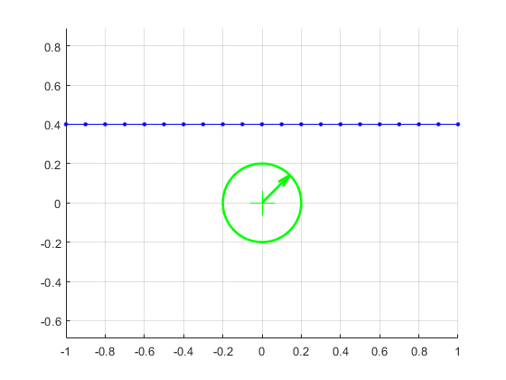
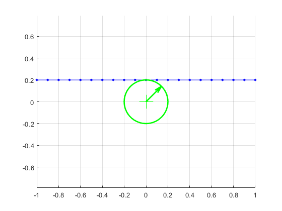
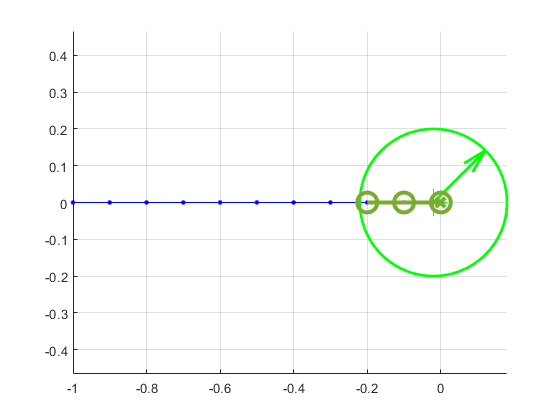
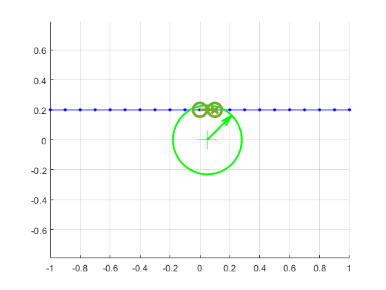
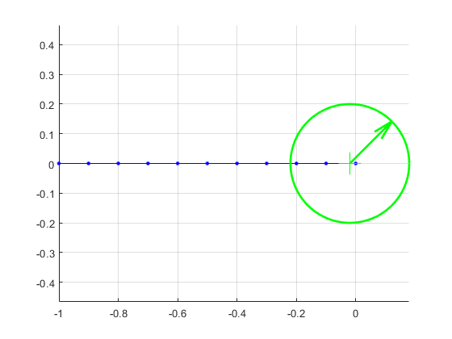
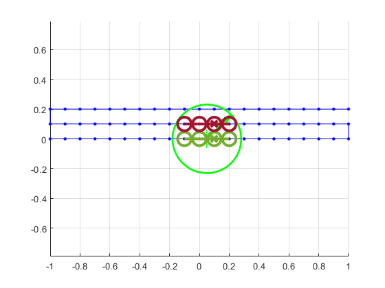

Contents
- Check assertions
- This one returns nothing since there is no portion of the path in the
- This one returns nothing since there is one portion of the path in the
- This one returns nothing since there are only two points only within boundary
- This one returns nothing since there is only two points the path in the
- This one returns the last three points
- Show effect of minimum_number_of_indices_in_zone
- Multiple laps
- Fail conditions
- Fails because start_definition is not correct type
- Fails because start_definition is not correct type
- Fails because end_definition is not correct type
- Fails because end_definition is not correct type
- Fails because excursion_definition is not correct type
% script_test_fcn_Laps_findPointZoneStartStopAndMinimum.m % tests fcn_Laps_findPointZoneStartStopAndMinimum.m % Revision history % 2022_04_08 % -- first write of the code close all clc % Create some data to plot full_steps = (-1:0.1:1)'; zero_full_steps = 0*full_steps; ones_full_steps = ones(length(full_steps(:,1)),1); half_steps = (-1:0.1:0)'; zero_half_steps = 0*half_steps; ones_half_steps = ones(length(half_steps(:,1)),1);
Check assertions
%%%%%%%%%%%%%%%%%%%%%%%%%%%%%%%%%%%%%%%%%%%%%%%%% % _ _ % /\ | | (_) % / \ ___ ___ ___ _ __| |_ _ ___ _ __ ___ % / /\ \ / __/ __|/ _ \ '__| __| |/ _ \| '_ \/ __| % / ____ \\__ \__ \ __/ | | |_| | (_) | | | \__ \ % /_/ \_\___/___/\___|_| \__|_|\___/|_| |_|___/ % % % See: https://patorjk.com/software/taag/#p=display&f=Big&t=Assertions %%%%%%%%%%%%%%%%%%%%%%%%%%%%%%%%%%%%%%%%%%%%%%%%%
This one returns nothing since there is no portion of the path in the
criteria, even though the path goes right over the criteria
fig_num = 1; query_path = ... [full_steps 0.4*ones_full_steps]; zone_definition = [0 0 0.2]; % Located at [0,0] with radius 0.2 [zone_start_indices, zone_end_indices, zone_min_indices] = ... fcn_Laps_findPointZoneStartStopAndMinimum(... query_path,... zone_definition,... [],... fig_num); assert(isempty(zone_start_indices)); assert(isempty(zone_end_indices)); assert(isempty(zone_min_indices));
Index In_zone 1 0 2 0 3 0 4 0 5 0 6 0 7 0 8 0 9 0 10 0 11 0 12 0 13 0 14 0 15 0 16 0 17 0 18 0 19 0 20 0 21 0
This one returns nothing since there is one portion of the path in the
criteria
fig_num = 2; query_path = ... [full_steps 0.2*ones_full_steps]; zone_definition = [0 0 0.2]; % Located at [0,0] with radius 0.2 [zone_start_indices, zone_end_indices, zone_min_indices] = ... fcn_Laps_findPointZoneStartStopAndMinimum(... query_path,... zone_definition,... [],... fig_num); assert(isempty(zone_start_indices)); assert(isempty(zone_end_indices)); assert(isempty(zone_min_indices));
Index In_zone 1 0 2 0 3 0 4 0 5 0 6 0 7 0 8 0 9 0 10 0 11 0 12 0 13 0 14 0 15 0 16 0 17 0 18 0 19 0 20 0 21 0
This one returns nothing since there are only two points only within boundary
fig_num = 2; radius = 0.2; query_path = ... [full_steps 0.2*ones_full_steps]; zone_definition = [0.05 0 0.23]; % Located at [0.05,0] with radius 0.23 [zone_start_indices, zone_end_indices, zone_min_indices] = ... fcn_Laps_findPointZoneStartStopAndMinimum(... query_path,... zone_definition,... [],... fig_num); assert(isempty(zone_start_indices)); assert(isempty(zone_end_indices)); assert(isempty(zone_min_indices));
Index In_zone 1 0 2 0 3 0 4 0 5 0 6 0 7 0 8 0 9 0 10 0 11 1 12 1 13 0 14 0 15 0 16 0 17 0 18 0 19 0 20 0 21 0

This one returns nothing since there is only two points the path in the
criteria. The third point is not strictly within the radius
fig_num = 3; radius = 0.2; query_path = ... [half_steps zero_half_steps]; zone_definition = [0 0 0.2]; % Located at [0,0] with radius 0.2 [zone_start_indices, zone_end_indices, zone_min_indices] = ... fcn_Laps_findPointZoneStartStopAndMinimum(... query_path,... zone_definition,... [],... fig_num); assert(isempty(zone_start_indices)); assert(isempty(zone_end_indices)); assert(isempty(zone_min_indices));
Index In_zone 1 0 2 0 3 0 4 0 5 0 6 0 7 0 8 0 9 0 10 1 11 1
This one returns the last three points
The zone is nudged over to the three points
fig_num = 3; radius = 0.2; query_path = ... [half_steps zero_half_steps]; zone_definition = [-0.02 0 0.2]; % Located at [0.02,0] with radius 0.2 [zone_start_indices, zone_end_indices, zone_min_indices] = ... fcn_Laps_findPointZoneStartStopAndMinimum(... query_path,... zone_definition,... [],... fig_num); assert(isequal(zone_start_indices,9)); assert(isequal(zone_end_indices,11)); assert(isequal(zone_min_indices,11));
Index In_zone 1 0 2 0 3 0 4 0 5 0 6 0 7 0 8 0 9 1 10 1 11 1 Start, end, and minimum indices for good zones: Istart Iend Imin 9 11 11
Show effect of minimum_number_of_indices_in_zone
% Show that the previous one that failed now works if lower number to 2 % points in the zone minimum_number_of_indices_in_zone = 2; fig_num = 2; radius = 0.2; query_path = ... [full_steps 0.2*ones_full_steps]; zone_definition = [0.05 0 0.23]; % Located at [0.05,0] with radius 0.23 [zone_start_indices, zone_end_indices, zone_min_indices] = ... fcn_Laps_findPointZoneStartStopAndMinimum(... query_path,... zone_definition,... minimum_number_of_indices_in_zone,... fig_num); assert(isequal(zone_start_indices,11)); assert(isequal(zone_end_indices,12)); assert(isequal(zone_min_indices,12)); % Show that the previous one that worked now fails if raise number to 4 % points in the zone minimum_number_of_indices_in_zone = 4; fig_num = 3; radius = 0.2; query_path = ... [half_steps zero_half_steps]; zone_definition = [-0.02 0 0.2]; % Located at [0.02,0] with radius 0.2 [zone_start_indices, zone_end_indices, zone_min_indices] = ... fcn_Laps_findPointZoneStartStopAndMinimum(... query_path,... zone_definition,... minimum_number_of_indices_in_zone,... fig_num); assert(isempty(zone_start_indices)); assert(isempty(zone_end_indices)); assert(isempty(zone_min_indices));
Index In_zone 1 0 2 0 3 0 4 0 5 0 6 0 7 0 8 0 9 0 10 0 11 1 12 1 13 0 14 0 15 0 16 0 17 0 18 0 19 0 20 0 21 0 Start, end, and minimum indices for good zones: Istart Iend Imin 11 12 12 Index In_zone 1 0 2 0 3 0 4 0 5 0 6 0 7 0 8 0 9 1 10 1 11 1 
Multiple laps
Create some data to plot
full_steps = (-1:0.1:1)'; zero_full_steps = 0*full_steps; ones_full_steps = ones(length(full_steps(:,1)),1); half_steps = (-1:0.1:0)'; zero_half_steps = 0*half_steps; ones_half_steps = ones(length(half_steps(:,1)),1); minimum_number_of_indices_in_zone = 3; fig_num = 5; radius = 0.2; query_path = ... [full_steps 0*ones_full_steps; -full_steps 0.1*ones_full_steps; full_steps 0.2*ones_full_steps ]; zone_definition = [0.05 0 0.23]; % Located at [0.05,0] with radius 0.23 [zone_start_indices, zone_end_indices, zone_min_indices] = ... fcn_Laps_findPointZoneStartStopAndMinimum(... query_path,... zone_definition,... minimum_number_of_indices_in_zone,... fig_num); assert(isequal(zone_start_indices,[10; 30])); assert(isequal(zone_end_indices, [13; 33])); assert(isequal(zone_min_indices, [12; 31]));
Index In_zone 1 0 2 0 3 0 4 0 5 0 6 0 7 0 8 0 9 0 10 1 11 1 12 1 13 1 14 0 15 0 16 0 17 0 18 0 19 0 20 0 21 0 22 0 23 0 24 0 25 0 26 0 27 0 28 0 29 0 30 1 31 1 32 1 33 1 34 0 35 0 36 0 37 0 38 0 39 0 40 0 41 0 42 0 43 0 44 0 45 0 46 0 47 0 48 0 49 0 50 0 51 0 52 0 53 1 54 1 55 0 56 0 57 0 58 0 59 0 60 0 61 0 62 0 63 0 Start, end, and minimum indices for good zones: Istart Iend Imin 10 13 12 30 33 31
Fail conditions
if 1==0
Fails because start_definition is not correct type
clc
start_definition = [1 2];
[lap_traversals, input_and_exit_traversals] = fcn_Laps_breakDataIntoLaps(...
single_lap.traversal{1},...
start_definition); %#ok<*ASGLU>
Fails because start_definition is not correct type
clc
start_definition = [1 2 3 4];
[lap_traversals, input_and_exit_traversals] = fcn_Laps_breakDataIntoLaps(...
single_lap.traversal{1},...
start_definition);
Fails because end_definition is not correct type
clc
start_definition = [1 2 3];
end_definition = [1 2];
[lap_traversals, input_and_exit_traversals] = fcn_Laps_breakDataIntoLaps(...
single_lap.traversal{1},...
start_definition,...
end_definition);
Fails because end_definition is not correct type
clc
start_definition = [1 2 3];
end_definition = [1 2 3 4];
[lap_traversals, input_and_exit_traversals] = fcn_Laps_breakDataIntoLaps(...
single_lap.traversal{1},...
start_definition,...
end_definition);
Fails because excursion_definition is not correct type
clc
start_definition = [1 2 3];
end_definition = [1 2 3];
excursion_definition = [1 2 3 4];
[lap_traversals, input_and_exit_traversals] = fcn_Laps_breakDataIntoLaps(...
single_lap.traversal{1},...
start_definition,...
end_definition,...
excursion_definition);
end